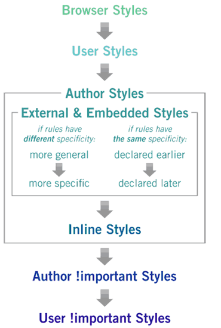

Web Appliations
CSS - Everything is s pretty!
Materials: https://github.com/sosnowski/Kurs_UAM
CSS - Cascading Style Sheets
- Describe the look and feel of the HTML elements
- Separation of the concept layers! Stukture and look are not directly connected
Include CSS element
Inline
Test
Internal stylesheet
External stylesheet

Basic selectors
p {
color: red; // all p elements
}
.some-class {
color: red; // all elements with "some-class" class
}
#smth {
color: red; // one element with given id
}
.one.two {
color: red; // elements that have both classes
}
.one .two {
color: red; // ".two" element that is a descendant of ".one"
}
.one > .two {
color: red; // .two is a child of .one
}Pseudoclasses
a {
color: red;
}
a:hover {
color: green;
text-decoration: underscore;
}Cascading?

Inheritance
Some css properties are inherited by the descendants of the element
- Text properties: (font, line-height, text-align etc.)
- List related: (list-style, list-style-type etc.)
- Color
CSS properties
Color
color: #FF0000;
color: red;
color: rgb(255, 0, 0);Text
text-align: center;
font-weight: bold;
text-decoration: underline;
font-size: 12px;
font-size: 2em;Background
background: #FFFF00;
background-color: green;
background-image: url(../image.png);Border
border: 1px solid #000;
border-radius: 4px;
border-width: 2px;Margin and Padding
margin: 5px;
margin: 3px 2px 4px 6px;
margin-left: 10px;
padding: 3em;Display
display: block;Standalone box, use the whole width of the container
Display
display: inline;Displayed inline, flow like a line element. No width or height, only padding and margin
Display
display: inline-block;Box that has dimmensions, but will be flowed with surrounding content
Transitions
.element {
color: green;
transition: color 2s;
}
.element:hover {
color: red;
}